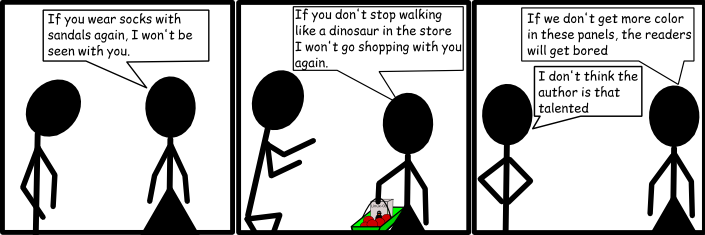
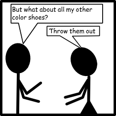
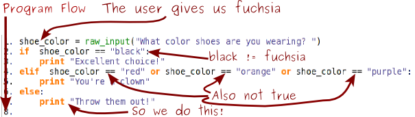

Chapter 4: Conditionals
If you keep making that face, it will get stuck like that. -My mother
Python has a number of comparison operators that you can use to check if a particular statement is True or False. The absolute hardest one to remember is the equals operator, which is written ==.
Remember last chapter, when I said you'd get that confused with the assignment operator, =. Yeah. Stop that.
Use == to test if two things have the same value. For example:
- print 5==4
- print "dog"=="cat"
- print 3==3
will print out
False False True
You can also use the less than (<) and greater than (>) signs to compare either numbers or letters.
- print 5>4
- print "dog">"cat"
- print 3<3
True True False
That 5>4 is True should be pretty obvious, as well as 3<3 being False. But why is "dog">"cat", other than the obvious fact that dogs are better than cats? Because of the order of the letters. Because d comes after c, d is greater than c. d>c>b>a.
You can use >= and >= to greater than or equal to and less than or equal to.
- print 5>4
- print "dog">="cat"
- print 3<=3
True True True
The last comparison operator that we'll worry about is the not equals operator, !=. It returns true if two things are not the same.
- print 5!=4
- print "dog"!="cat"
- print 3!=3
True True False
Conditionals
You're very familair with conditionals. You probably get them from your parents all the time. I get them from my wife. For example:
We could rewrite some of these conditons as Python code. For example:
- if attire=="socks with sandals":
- wife_location = "not near Mr. Schmidt"
Notice the use of the ==. We're checking to see if my attire is "socks with sandals" and if it is, we're setting my wife's location to anywhere else, with the assignment operator, =.
We've also introduced another symbol here: the colon (:). You can use the : to tell Python that all the indented code that follows belongs together, and should be treated separately.
- shoe_color = raw_input("What color shoes are you wearing? ")
- if shoe_color == "black":
- print "Excellent choice!"
In the above example, we're asking the user for the color of their shoes, and if the color is black, we print "Excellent Choice!"

We can also write group if statements together, in the event we have multiple conditions. To do this, use an elif, which stands for "Else If"
- shoe_color = raw_input("What color shoes are you wearing? ")
- if shoe_color == "black":
- print "Excellent choice!"
- elif shoe_color == "red":
- print "You're a clown"
- elif shoe_color == "orange":
- print "You're a clown"
- elif shoe_color == "purple":
- print "You're a clown"
But doesn't this seem wasteful? That's got to be a way to combine them. There is. Just use the words and and or
- shoe_color = raw_input("What color shoes are you wearing? ")
- if shoe_color == "black":
- print "Excellent choice!"
- elif shoe_color == "red" or shoe_color == "orange" or shoe_color == "purple":
- print "You're a clown"
Notice what we didn't do. We didn't say
- elif shoe_color == "red" or "orange" or "purple":
- print "You're a clown"
You or I would understand what that means right away. But Python isn't that smart. It will evaluate each thing between an and or or separately. It will first check to see if shoe_color == "red", then it will check to see if orange, which doesn't make a lot of sense.
In addition to if and elif there's else, which handles any other condition. else has no condition, because it is True for all conditions.
- shoe_color = raw_input("What color shoes are you wearing? ")
- if shoe_color == "black":
- print "Excellent choice!"
- elif shoe_color == "red" or shoe_color == "orange" or shoe_color == "purple":
- print "You're a clown"
- else:
- print "Throw them out!"
We'll ask the user for a shoe color. If their shoe color is black, we'll print "Excellent Choice!", otherwise if their shoe color is red, orange or purple, we'll print "You're a clown", if their shoe color is anything else in the world, we'll print "Throw them out!", which is probably sound advice. Here's a sample run of that program, with user input in bold:
What color shoes are you wearing? fuchsia
Throw them out!
Python will work through each line of our if-else chain, and stops when it finds a line that is true.
What we did in the illustration here is actually the most important troubleshooting ability you can possibly learn when programming. You need to learn to pretend to be a computer. Do exactly what's written in your program, and keep track of what the value of each variable is. It might help to print a program out on paper and write on top of it.
This website will be taken offline before the end of 2011